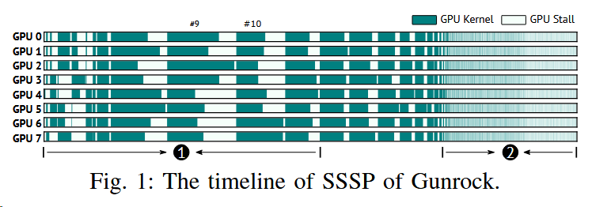

Efficient Multi-GPU Graph Processing with Remote Work Stealing
A paper at the ICDE 2023 conference.
This paper analyzes the dynamic loadimbalance (DLB) problem and the long tail (LT) problem in multi-GPUs and solves them by adaptive remote work stealing onthe-fly.
"A recent work [5] shows that systems lose nearly a third of device utilization, as they move from a single node to distributed implementations."
